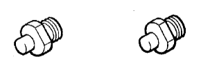
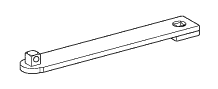

Water Pump Assembly (2AZ-FE) Preparation [Installation]
 | 09960-10010 | Variable Pin Wrench Set |
 | (09962-01000) | Variable Pin Wrench Arm Assembly |
 | (09963-00700) | Pin 7 |
 | 09961-01270 | Torque Wrench Adapter |
 | RC-3TC | Resin Radiator Cap Tester Adapter Set Supplied by Banzai Ltd. |
 | RCT-2A | Radiator Cap Tester Supplied by Banzai Ltd. |
| IRC-3TC | Resin Radiator Cap Tester Adapter Set Supplied by Iyasaka Co., Ltd. |
| RCT-3 | Radiator Cap Tester Supplied by Iyasaka Co., Ltd. |
 | QL-100N | QL Torque Wrench (100N) Supplied by Banzai Ltd. and Iyasaka Co., Ltd. |
| QL-25N | QL Torque Wrench (25N) Supplied by Banzai Ltd. and Iyasaka Co., Ltd. |
| QL-50N | QL Torque Wrench (50N) Supplied by Banzai Ltd. and Iyasaka Co., Ltd. |
| Toyota Genuine Super Long Life Coolant | ||
| Seal Packing1282B V93500112 Supplied by Tacti Corporation |